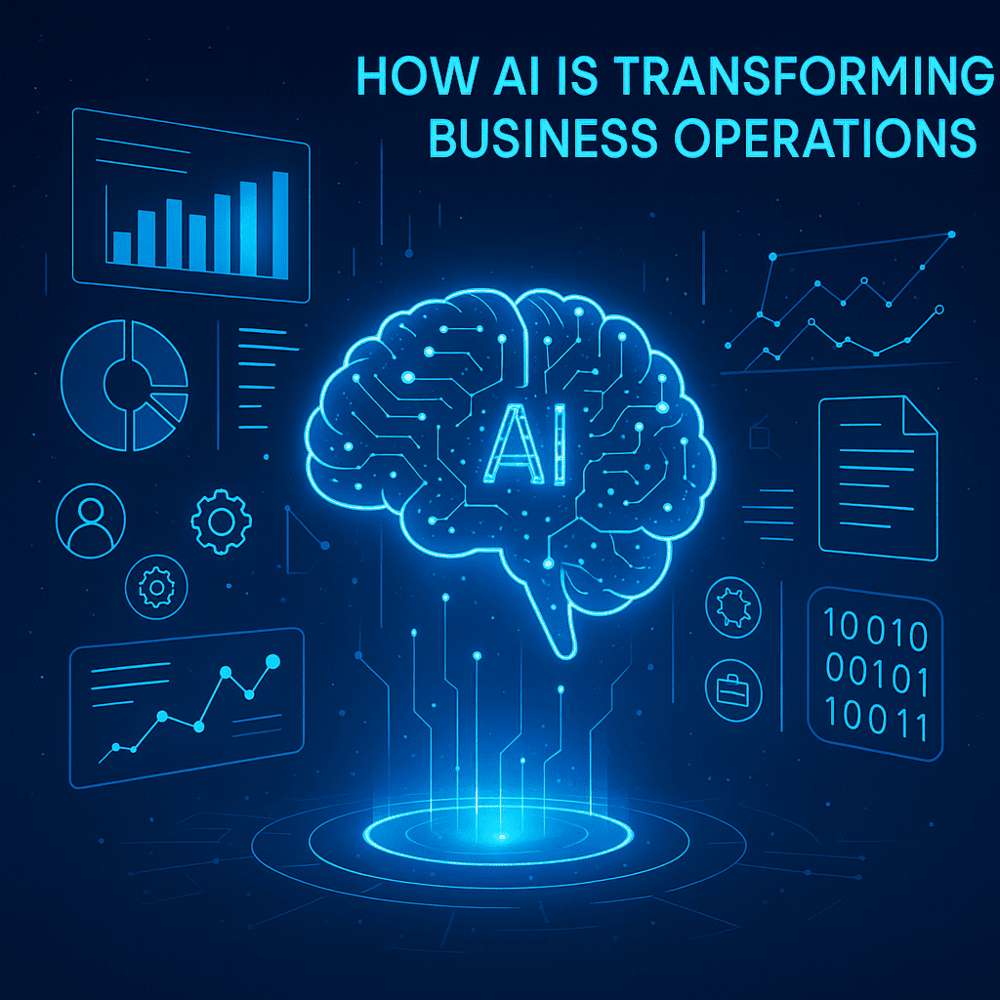

Our Blogs

How AI Is Transforming Business Operations
Explore practical ways AI automates work, improves decision-making, and unlocks new business opportunities.
Read MoreBuilding Scalable Web Applications
Discover methods to build scalable web applications that handle growth efficiently and maintain performance.
Read MoreThe Future of Mobile App Development
Explore future mobile trends shaping faster, smarter, and more intuitive app experiences.
Read MoreHow AI helps with fraud detection in recruitment
Discover how AI helps companies detect fake resumes, prevent identity fraud, and secure hiring processes.
Read More